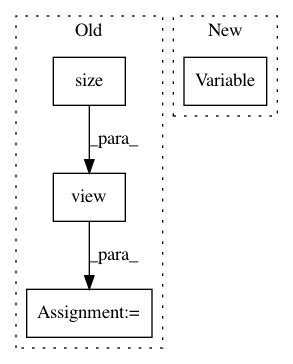

f860a09e81ea4bff1f14014e936803a72868959d,lib/model/faster_rcnn/faster_rcnn_cascade.py,_RCNN_base,forward,#_RCNN_base#Any#Any#Any#Any#,42
Before Change
// do roi pooling based on predicted rois
rois_var = Variable(rois.view(-1,5))
pooled_feat = self.RCNN_roi_pool(base_feat, rois_var)
pooled_feat_all = pooled_feat.view(pooled_feat.size(0), -1)
return rois, pooled_feat_all, rois_label, rois_target, rois_inside_ws, rois_outside_ws, rpn_loss_cls, rpn_loss_bbox
class _fasterRCNN(nn.Module):
After Change
roi_data = self.RCNN_proposal_target(rois, gt_boxes, num_boxes)
rois, rois_label, rois_target, rois_inside_ws, rois_outside_ws = roi_data
rois = Variable(rois)
rois_label = Variable(rois_label.view(-1))
rois_target = Variable(rois_target.view(-1, rois_target.size(2)))
rois_inside_ws = Variable(rois_inside_ws.view(-1, rois_inside_ws.size(2)))
rois_outside_ws = Variable(rois_outside_ws.view(-1, rois_outside_ws.size(2)))
In pattern: SUPERPATTERN
Frequency: 3
Non-data size: 4
Instances
Project Name: jwyang/faster-rcnn.pytorch
Commit Name: f860a09e81ea4bff1f14014e936803a72868959d
Time: 2017-08-30
Author: echosenm@gmail.com
File Name: lib/model/faster_rcnn/faster_rcnn_cascade.py
Class Name: _RCNN_base
Method Name: forward
Project Name: ikostrikov/pytorch-a2c-ppo-acktr
Commit Name: 54a0f981802ccb86350033a42c3cedd114efc49d
Time: 2017-09-24
Author: ikostrikov@gmail.com
File Name: main.py
Class Name:
Method Name: main
Project Name: OpenNMT/OpenNMT-py
Commit Name: 809d0e5b52561fefd3b0d98c08d3cbb175d7e706
Time: 2017-07-04
Author: sasha.rush@gmail.com
File Name: onmt/Models.py
Class Name: Encoder
Method Name: forward